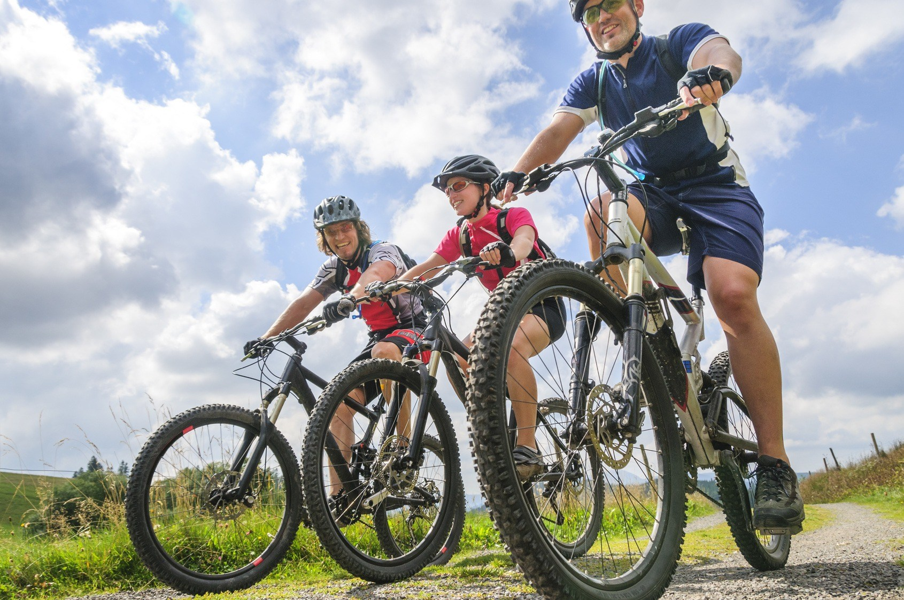
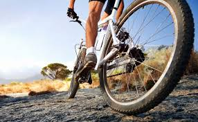
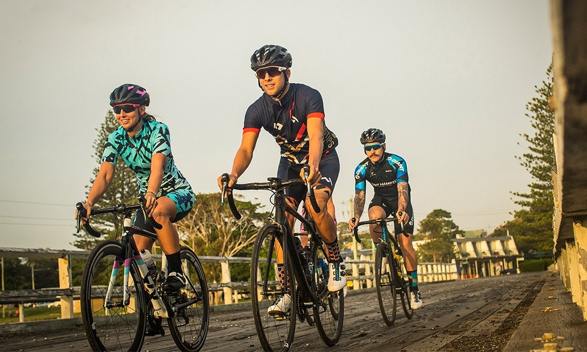

sdaadas
El Ciclismo

sdaadas
Ciclistas Cololmbianos que hicieron historiaPara a hablar de ciclismo, tenemos que empezar con el gran ciclista colombiano: Luis Alberto Herrera Herrera. ‘Lucho’, como fue conocido desde 1981, es uno de los emblemas más importantes del deporte colombiano quiénn 1989, nos regalo la victoria de 2 etapas. El nacido en Fusagasugá volvió a ganar una jornada en 1992. Es de los ciclistas colombianos con más títulos internacionales. Oriundo de Fusagasugá, ‘Lucho’ hizo vibrar a miles de colombianos que seguían a la distancia las transmisiones de sus victorias en el exterior, de las que se destaca especialmente la Vuelta a España en 1987. |
Martín Emilio ‘Cochise’ Rodríguez nació en Medellín el 14 de abril de 1942, y en 1973, se convirtió en el primer colombiano en ganar una etapa en el Giro, quien repitió triunfo de etapa en la edición de 1975.Santiago Botero es otro de los ciclistas más recordados por los colombianos. Sus destacados triunfos en el Tour de Francia refrescaron el amor de las nuevas generaciones por el ciclismo. Actuó en equipos como T-Mobile Team y Kelme. Sus gestas más sobresalientes fueron en pruebas contrarreloj. En KFC, todos los empleados siguen un plan de formación e integración |
GiroEn 1995, Oliverio Rincón ganó una etapa en el Giro de Italia y José Jaime González cerró los 90 con 2 triunfos: uno en 1997 y otro en 1999 en la misma competencia. |
|
fdsdsfsfsfd |
|
fdsdsfsfsfd |
|  |
La Competencias a nivel mundial. |
|
|  |
LA SELECCIÓN |
|
|  |